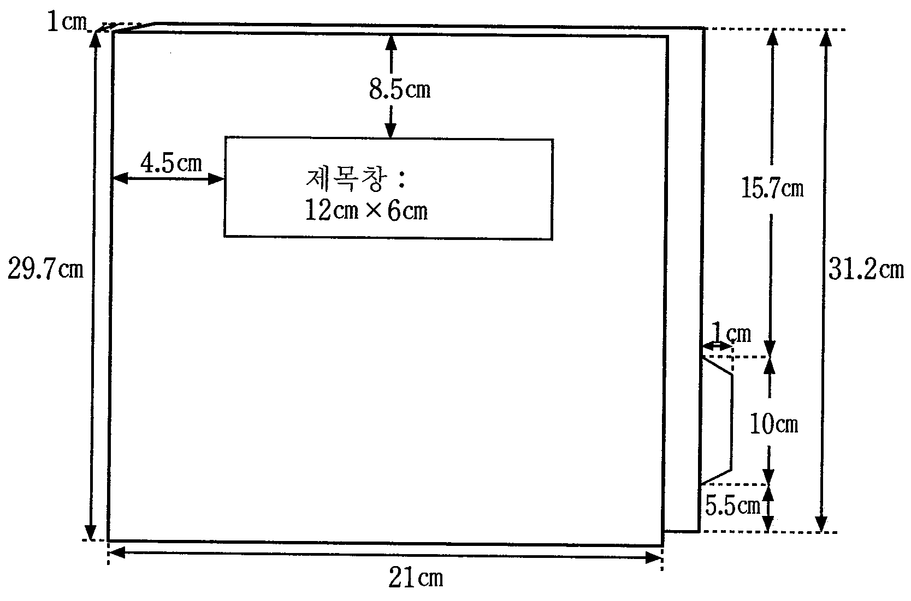
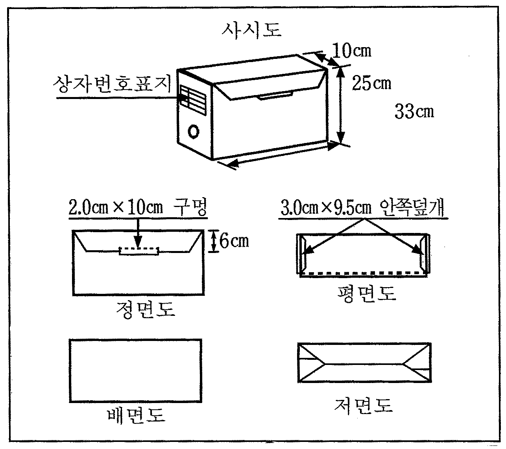
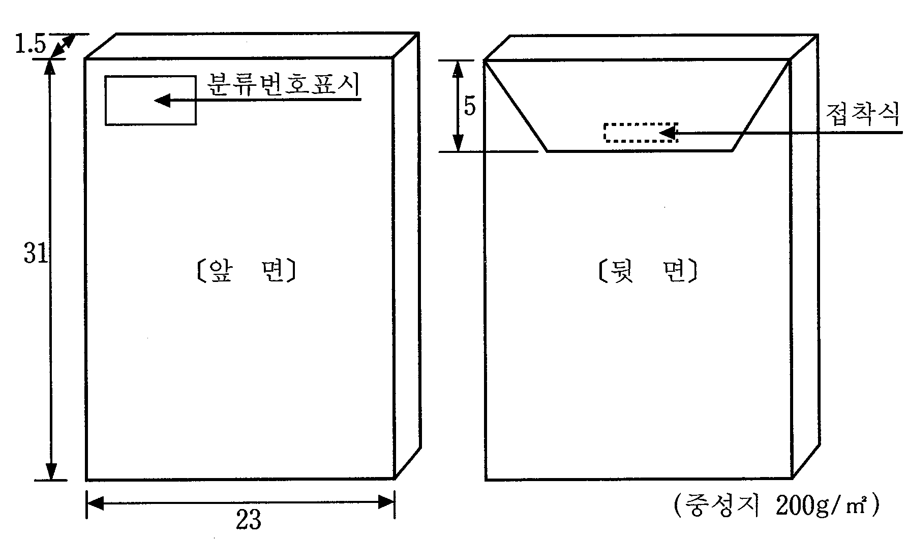
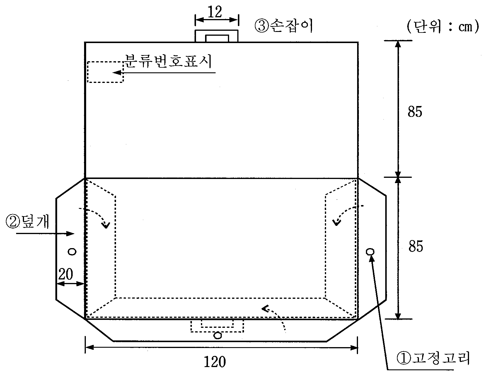

기록물관리규칙
제정
2011. 10. 02.
내규
제084호
전부개정
2019. 10. 16.
내규
제467호
내규명 변경
2020. 03. 20.
(타)개정
2022. 02. 24.
내규
제3-28호
(타)개정
2022. 06. 29.
내규
제3-71호
개정
2023. 05. 09.
내규
제3-104호
제1장 총 칙
제1조(목적) 이 규칙은「공공기록물 관리에 관한 법률」(이하 “공공기록물법”이라 한다) 제13조 및 동법 시행령 제10조의 규정에 따라 한국농업기술진흥원(이하 “농진원”이라 한다)의 기록관(이하 “기록관”이라 한다)을 설치하고, 그 운영에 관하여 필요한 사항을 정함을 목적으로 한다. 개정 2022.02.24.
제2조(정의) 이 규칙에서 사용하는 용어의 정의는 다음 각 호와 같다.
1. “기록물”이라 함은 농진원이 업무와 관련하여 생산 또는 접수한 문서, 도서, 대장, 카드, 도면, 시청각물, 전자문서 등 모든 형태의 기록정보 자료와 행정박물을 말한다. 개정 2022.02.24.
2. “기록물관리”라 함은 기록물의 생산, 분류, 정리, 이관, 수집, 평가, 폐기, 보존, 공개, 활용 및 이에 부수되는 제반업무를 말한다.
3. “기록관”이라 함은 기록물을 체계적으로 보존·관리하고, 효율적 활용을 위하여 필요한 보존서고 공간, 열람 공간, 사무 공간, 작업 공간, 보존시설 및 장비, 기록관리시스템, 기록물관리 전문요원 및 전문인력 등을 모두 갖춘 기구를 말한다.
4. “기록물관리 전문요원”(이하 “전문요원”이라 한다.)이란 공공기록물 관리법 제78조에 규정된 요건을 갖추고 공공기관에 배치되어 체계적이고 전문적인 기록물관리를 수행하는 기록전문가를 말한다. 개정 2023.05.09.
5. “카드류”라 함은 사람·물품 또는 권리관계 등에 관한 사항의 관리를 위하여 낱장으로 된 일정서식에 변동사항을 연속적으로 기록하면서 비치·활용하는 인사기록카드·생활기록부·토지대장·건물대장 등의 기록물의 유형을 말한다.
6. “도면류”라 함은 설계도·지적도·도시계획도 등 낱장 또는 여러 장의 도형이나 그림으로 된 특수규격의 기록물로서 일반문서류와 분리하여 도면함 또는 도면봉투 등에 관리하여야 하는 기록물의 유형을 말한다.
7. “비치기록물”이라 함은 카드·도면·대장 등과 같이 주로 사람·물품 또는 권리관계 등에 관한 사항의 관리나 확인 등에 수시로 사용되고 처리 부서에서 계속하여 비치·활용하여야 하는 기록물을 말한다.
8. “행정박물”이라 함은 공공기관이 업무와 관련하여 생산․활용한 형상기록물로서 행정적․역사적․문화적․예술적 가치가 높은 기록물을 말한다.
9. “처리부서”라 함은 농진원의 각 기능별로 업무처리를 주관하는 부서를 말한다.
10. “기록물관리부서”라 함은 「직제규정」에 따라 기록물관리 업무를 담당하는 부서를 말한다. 개정 2022.02.24.
11. “단위과제카드(기록물철)”라 함은 2건 이상의 관련 기록물을 합철하여 관리하는 문서철·카드·도면·사진 등의 보관봉투, 테이프, 필름 등의 롤, 개개의 디스켓, 컴퓨터파일의 디렉토리 등 기록물 묶음의 기본단위를 말한다.
12. “기록관리기준표”란 기능분류체계(BRM)에 따라, 단위과제별로 업무설명, 보존기간, 보존기간책정사유, 비치여부, 공개여부, 접근권한 등을 정한 표를 말한다.
13. “기록관리시스템”이라 함은 기록물의 수집, 보존(복제본 제작 및 이중보존매체의 제작을 포함한다), 활용, 이관, 폐기 등 기록관에서 기록물 관리를 전자적으로 수행하는 시스템을 말한다.
14. “전자기록생산시스템”이라 함은 「행정 효율과 협업 촉진에 관한 규정」 제3조제10호부터 제12호까지의 전자문서시스템, 행정정보시스템, 업무관리시스템을 말한다. 개정 2022.02.24.
15. “영구기록물관리기관”이라 함은 「공공기록물법」 제3조제5호에 따라 기록물의 영구보존에 필요한 시설 및 장비와 이를 운영하기 위한 전문인력을 갖추고 기록물을 영구적으로 관리하는 기관을 말한다.
제3조(적용범위) ① 기록물관리에 관하여 다른 법령과 농진원의 규정에 특별히 정한 경우를 제외하고는 이 규칙에서 정하는 바에 따른다. 개정 2022.02.24.
② 비밀문서에 관하여는 이 규칙의 적용을 받는 외에 비밀 보호에 관한 법령 및 농진원 내규에 의하여 처리한다. 개정 2022.02.24.
③ 그 밖에 이 규칙에서 정하지 아니한 기록물관리에 관한 사항은 「공공기록물법」 등 관련 법령 및 농진원 내규를 따른다. 개정 2022.02.24.
제2장 구성 및 분장업무
제4조(소속 및 인원구성) ① 기록관장은 기록물관리 주관부서에 설치하고, 당해 부서의 부서장이 기록관장이 된다.
② 기록관장은 기록관의 업무를 효율적으로 수행하기 위하여 전문요원과 기록물의 정리·기술, 기록정보 관리, 보존업무, 그 밖에 기록물관리의 업무 수행에 필요한 전담인력을 배치하여야 한다.
③ 기록관장은 기록물관리 업무를 효율적으로 수행하기 위하여 처리부서의 장으로 하여금 기록물관리책임자를 지정하여 처리부서의 기록물관리 업무를 수행하도록 하여야 한다.
④ 기록관장은 효율적인 기록물관리 업무수행을 위하여 농진원 처리부서에 모든 기록물은 기록관으로 이관 관리하도록 하여야 한다. 개정 2022.02.24.
제5조(주요업무 및 업무분장) ① 기록관은 다음 각 호의 사항에 관한 업무를 총괄한다.
1. 기록물관리에 관한 기본계획 수립·시행
2. 소관 기록물 수집·관리 및 활용
3. 기능분류체계(BRM) 및 기록관리기준표의 관리
4. 기록물생산현황 취합 및 영구기록물관리기관으로의 통보
5. 국가 주요기록물의 영구기록물관리기관으로의 이관
6. 주요회의록, 조사·연구 또는 검토 기록물, 비밀기록물, 간행물, 행정박물, 시청각기록물의 관리 개정 2023.05.09.
7. 미등록 기록물의 수집 및 등록관리
8. 기록물평가심의회(이하 “심의회”라 한다) 운영 및 기록물 폐기 관리
9. 소관 비공개기록물 및 비밀기록물의 공개 재분류
10. 기록물 보존서고 및 자료실 관리
11. 기록물 정수 점검 및 실태조사
12. 기록물관리 지도·교육 운영 계획 수립 및 시행
13. 당해 부서의 기록물관리에 대한 지도·감독 및 지원
14. 중요기록물의 재난대비 계획 수립
15. 기록관의 시설 및 장비 관리
16. 기록관리시스템의 설치 및 운영
17. 활용대상 주요 기록물의 디지털자료 변환 및 검색·열람제공
18. 소관 비전자기록물의 전자화
19. 보존가치가 높은 준영구 이상 기록물의 보존매체 수록
20. 소관 기록물의 검색·열람 제공
21. 기록물 편찬·전시·홍보
22. 소관 기록물에 대한 통계의 작성·관리
23. 그 밖에 기록관의 기록물관리에 관한 사항
② 제1항 각호의 업무에 관한 세부업무분장은 기록관장이 정한다.
제5조의2(기록물 책임자 및 담당자) ① 기록물관리 업무를 체계적으로 수행하기 위하여 각 부서별 기록물관리 책임자 및 담당자를 지정하여야 한다.
② 기록물 책임자는 다음 각 호의 업무를 수행한다.
1. 소관 부서 기록물관리 총괄에 관한 사항
2. 그 밖에 기록물관리에 관한 사항
③ 기록물 담당자는 다음 각 호의 업무를 수행한다.
1. 소관 부서의 기록물 등록 및 관리에 관한 사항
2. 소관 부서의 기록관리기준표 작성·관리에 관한 사항
3. 소관 부서의 기록물 정리·보관 및 이관에 관한 사항
4. 그 밖에 기록물관리에 관한 사항
제3장 기록물의 생산
제6조(기록물의 생산) ① 기록관의 장은 농진원에서 수행하는 모든 업무의 과정과 결과가 기록물로 생산·등록될 수 있도록 하여야 한다. 개정 2022.02.24.
② 기록관의 장은 「공공기록물법 시행령」 제17조부터 제19조까지의 조사·연구 또는 검토 기록물, 회의록, 시청각 기록물에 대한 생산 등록·관리 기준을 작성·관리하여야 한다. 개정 2022.02.24., 2023.05.09.
제6조의2(기록물생산현황의 통보) ① 처리부서의 장은 기록물의 원활한 수집 및 이관을 위하여 기록물생산현황을 매년 5월 31일까지 기록관장에게 전년도의 기록물생산현황을 전자기록생산시스템을 통하여 통보하여야 한다. 개정 2023.05.09.
② 처리부서의 장은 제1항에 따른 기록물생산현황을 기록물 정리결과를 기록물등록대장 등에 입력된 후에 작성하여야 한다.
③ 전문요원은 전년도의 기록물생산현황 결과를 취합하여 매년 8월 31일까지 내부 결재를 득해야 한다.
제4장 기록물의 등록 및 분류
제7조(기록물의 등록의무) ① 전문요원은 농진원에서 수행하는 모든 업무의 과정 및 결과가 기록물로 생산·등록될 수 있도록 하여야 한다. 개정 2022.02.24.
② 우편 또는 이메일, 팩스 등으로 접수한 기록물의 경우 전자기록생산시스템에서 비전자문서로 수동 등록해야 한다.
③ 제2항에 따라 비전자문서로 수동 등록 한 문서는 행정안전부령으로 정하는 접수인을 찍고 등록(접수)번호, 등록(접수)일자, 처리과, 공개여부 등을 기재하여야 한다.
제8조(기록관리기준표) ① 전문요원은 [별지 제3호 서식]에 따라 기록관리기준표를 작성·운영하여야 하며, 기록관리기준표의 관리항목은 단위과제 설명, 보존기간, 보존방법, 보존장소 및 비치기록물 해당 여부 등의 기준을 포함하여야 한다.
② 기록관리기준표는 처리부서에서 작성하여 전문요원의 승인 받는 것을 원칙으로 한다. 다만, 내부 상황에 따라 전문요원이 작성할 수 있다.
③ 기록관리기준표는 전자기록생산스시템으로 생성·관리하여야 하며, 단위과제 및 단위과제카드의 신설·변경·폐지 시에는 [별지 제4호 서식]의 기록관리기준표 신설·변경신청서에 따라 문서로 제출하여 기록관장에게 승인을 받는다.
④ 제3항에도 불구하고, 조직개편 및 업무확대 등 긴급을 요하는 상황인 경우에는 전문요원이 작성하여 기록관장의 승인을 받는다.
제9조(기록물의 등록) ① 모든 기록물은 생산·접수한 때에 그 기관의 전자기록생산시스템으로 생산 또는 접수등록번호가 부여되어 등록되도록 시스템을 운용하여야 한다.
② 기록관에서 직접 수집한 기록물은 기록관의 기록관리시스템에 등록하여 관리하여야 하며, 비전자기록물에 대하여는 전자화 방안에 따라 전자화하여 관리되도록 하여야 한다.
③ 처리부서는 농진원에서 생산 또는 접수한 비전자기록물을 전자기록생산시스템으로 등록하여야 한다. 이 경우 전자기록생산시스템에서 생산된 생산등록번호 및 접수등록번호를 생산 또는 접수한 해당 비전자기록물은 [별표 1]의 등록번호 표시방법에 따라 표기한다. 개정 2022.02.24., 2023.05.09.
④ 임직원은 등록된 기록물의 등록정보를 임의로 삭제 또는 수정할 수 없다.
⑤ 전문요원은 제4항에도 불구하고 필요에 따라 기록물의 등록정보를 삭제 또는 수정하는 경우에는 삭제 또는 수정 전의 기록물이 그대로 남아있도록 관리하여야 한다.
제9조의2(기록물의 등록예외) 제9조제1항에도 불구하고, 채용관련 불합격자 서류는 기록물로서 등록·관리하지 않는다.
제10조(기록물의 분류) ① 처리부서의 장은 기록물을 [별지 제3호 서식]의 기록관리기준표에 따라 처리부서별·단위과제별로 분류를 통해 관리하여야 한다. 개정 2023.05.09.
② 처리부서의 장은 처리부서별로 수행하는 단위과제를 확정하고, 기록관리기준표의 처리부서코드, 보존분류기준 및 검색어 등에 관한 사항을 지정하여야 한다.
③ 처리부서의 장은 부서 및 단위과제의 신설, 변경, 폐지 등으로 기록관리기준표 신설·변경신청서를 기록관장에게 제출하여야 한다.
④ 기록관리기준표 신설·변경신청서를 작성함에 있어서 단위과제에 비밀 관련 내용이 포함되어 있는 경우에는 그 내용이 노출되지 아니하도록 비밀로 지정하여 별도로 관리하여야 한다. 개정 2023.05.09.
제11조(기록물의 편철) ① 업무에 활용 중인 기록물은 진행문서파일 혹은 일반문서파일에 발생순서 또는 논리적 순서에 따라 편철한다.
② 업무에 활용이 끝난 기록물은 [별표 2]의 단위과제카드(기록물철) 표지, [별지 제4호 서식]의 색인목록, 기록물 건 순으로 배열한 후 [별표 3]의 보존용 표지를 씌워 보존용 클립으로 고장한 후 보존상자에 넣어 보관한다.
③ 편철된 단위과제카드(기록물철)는 [별표 4]의 보존상자에 단위과제별로 넣어 관리하고, 보존상자 측면에는 별표 5의 보존상자표지를 부착하여 관리한다.
④ 단위과제카드(기록물철)당 편철량은 100매 이내로 한다. 기록물의 양이 과다한 경우에는 분철하고, 동일한 제목과 분류번호를 부여하되 괄호 안에 권호수를 기입한다. 다만, 기록물의 논리적 순서에 따라 예외를 두어 100매 이상을 편철할 수 있다.
⑤ 기록물의 분류 및 편철은 등록과 동시에 실시하여야 한다.
제11조의2(카드류의 편철 및 관리) ① 카드류는 처리부서에서 비치활용기간이 종료될 때까지 편철하지 아니한 상태로 카드보관함에 넣어 관리한다.
② 처리부서에서 비치활용이 끝난 카드류는 [별표 6]의 카드류 보존봉투에 넣어 편철한 후 이를 보존상자에 넣어 관리한다.
③ 제2항에 따라 카드류를 보존봉투에 넣어 편철하는 경우에는 각 보존봉투의 맨 위에 색인목록을 놓고 그 목록순서에 따라 카드를 배열하여야 하며, 보존봉투당 카드의 편철량은 30건 이내로 함을 원칙으로 한다. 다만, 카드류의 논리적 순서에 따라 예외를 두어 30건 이상을 편철할 수 있다.
제11조의3(도면류의 편철 및 관리) ① 도면류는 단위과제카드(기록물) 단위로 [별표 7]에 따라 도면류 보존봉투에 편 상태로 넣어 관리한다.
② 제1항에 따라 도면류를 편철하는 경우에는 맨 위에 색인목록을 놓고 그 목록순서에 따라 도면을 배열하여야 하며, 보존봉투당 도면의 편철량은 30매 이내로 함을 원칙으로 한다. 다만, 도면류의 논리적 순서에 따라 예외를 두어 30건 이상을 편철할 수 있다.
③ 편철된 도면류의 보존봉투는 도면보관함에 편 상태로 눕혀서 관리한다.
제11조의4(사진·필름류의 편철 및 관리) ① 사진·필름류는 단위과제카드(기록물철) 단위로 당해 사진·필름의 규격에 적합한 [별표 8]의 사진·필름류 보존봉투에 넣어 편철한 후 보존상자에 넣어 관리한다.
② 제1항에 따라 사진·필름류를 편철하는 경우에 맨 위에는 색인목록을 놓고 그 목록순서에 따라 기록물을 편철하여야 한다. 건 이상을 편철할 수 있다.
제11조의5(단위과제카드(기록물철)의 분류번호 표시) ① 단위과제카드(기록물철)의 표지, 보존상자 또는 보존봉투와 색인목록에는 해당 단위과제카드(기록물철)의 분류번호를 표시하여야 한다.
② 테이프·디스크류에 대하여는 본체와 보존상자에 적합한 규격으로 [별표 9]와 같이 해당 분류번호를 표시하여야 한다.
제12조(기록물의 정리) ① 기록관의 장은 각 부서의 처리부서에서 생산 완결된 기록물의 정리를 위하여 매년 2월 말까지 전년도 생산 및 접수한 기록물을 다음 각 호에 따라 정리하여야 한다.개정 2023.05.09.
1. 등록이 누락된 기록물의 유무를 확인하여 누락된 기록물을 추가등록하고, 실제 기록물과 등록사항이 일치하는지를 확인한다.
2. 단위과제카드(기록물철)을 생산연도(생산연도는 단위과제카드(기록물철)의 종료연도를 기준으로 한다)별로 구분하여 보존상자에 담는다.
3. 단위과제카드(기록물철) 안에 남아 있는 철침 등 이물질을 제거하고, 보존상자에 담아 관리한다.
4. 카드류, 도면류 등의 기록물은 구겨지지 않게 각각 [별표 6]의 카드류 보존봉투 또는 [별표 7]의 도면류 보존봉투와 보존상제 담에 이관할 수 있도록 편철·정리한다.
5. 비치활용이 종료된 기록물은 선별 및 정리하여 보존서고에 이관한다.
6. 그 밖에 기록물 정리에 필요한 사항을 행한다.
② 처리부서의 장은 제1항에 따라 전년도에 생산 완결된 기록물을 정리하여 그 결과를 3월 31일까지 기록관의 장에게 통보하여야 한다.
제13조(전자기록물의 표준관리) ① 처리부서에서 생산된 전자기록물은 행정안전부장관이 정하는 표준에 맞도록 생산·관리되어야 한다.
② 전문요원은 전자기록물의 등록·분류·정리·생산현황작성·이관·열람 등의 기록물관리 업무가 표준에 따라 수행될 수 있도록 전자적 환경을 구축하여야 한다.
제14조(행정박물의 관리) ① 행정박물 관리대상 및 이관시기는 [별표 10]과 같다.
② 영구기록물관리기관의 장이 이관대상으로 지정하지 않은 행정박물은 다음 각 호의 어느 하나에 해당하는 경우 제26조의 절차를 거쳐 폐기할 수 있다. 개정 2023.05.09.
1. 삭제 2023.05.09.
2. 행정박물이 행정적·역사적·문화적·예술적 가치의 변동으로 인하여 영구보존의 필요성이 상실된 것으로 인정되는 경우
3. 행정박물이 심각한 물리적 훼손으로 복원이 불가능한 경우
제5장 기록물의 이관 및 보존
제15조(기록물의 이관) ① 각 처리부서의 장은 보존기간 기산일(종결시점)로부터 2년의 범위 이내에 업무상 활용을 위해 자체 보관할 수 있으며, 이후에는 단위과제카드(기록물철) 별로 기록물 이관목록을 [별지 제5호 서식]에 따라 작성하여 기록관으로 이관하여야 한다. 다만, 처리부서에서 업무참고 등의 필요가 있는 기록물의 경우에는 사전에 기록물 이관연기신청서를 [별지 제6호 서식]에 따라 작성·제출하여 협의한 후 보존기간 기산일로부터 10년의 범위 내에서 이관시기를 연장할 수 있다.
② 직제개편, 한시조직의 해산, 통합·폐합 등의 경우에 기록관의 장은 인계인수 부서 간에 기록물 인계인수서를 [별지 제7호 서식]에 따라 작성하여 관리하도록 하여야 하며, 업무 승계부서가 없는 경우에는 당해 기록물을 기록관에서 이관 받아 관리하여야 한다.
제16조(기록물의 보존서고관리 및 배치) ① 기록관에서 인수한 기록물은 기록물 형태, 처리부서 등을 구분하여 보존서고에 배치하여야 하며, 해당 기록물의 보존위치를 식별할 수 있도록 하여야 한다.
② 기록관장은 기록물을 안전하게 보존·관리하기 위하여 보존서고에 보존환경의 유지, 보안대책 및 재난대비 계획 수립·시행 등 필요한 조치를 취하여야 한다.
③ 기록관장은 기록물의 안전한 보존을 위하여 기록물의 정수점검 및 상태점검 실시, 항온항습 환경 구축 등을 위하여 필요한 조치를 취하여야 한다.
④ 기록관장은 전문요원에 의하여 보존서고 출입과 기록물의 입고 및 출고가 통제되도록 하여야 한다.
⑤ 제4항에 따라 보존서고에 출입하는 자는 [별지 제8호 서식]의 보존서고 출입대장을 작성·관리하여야 한다.
제16조의2(보존기간) ① 기록물의 보존기간은 영구, 준영구, 30년, 10년, 5년, 3년, 1년 등 총 7종으로 구분하며, 보존기간별 분류기준은 [별표 11]의 기록물의 보존기간별 분류기준과 같다.
② 기록물의 보존기간은 제1항의 보존기간별 분류기준 및 기록관리기준표에서 정한 보존기간을 기준으로 각 처리부서의 장이 제12조에 따라 기록물을 정리할 때에 단위과제카드(기록물철) 별로 책정한다.
③ 제2항에도 불구하고 다음 각 호의 경우에는 예외로 할 수 있다.
1. 보존기간이 경과된 후에도 계속 보존할 필요가 있는 경우
2. 사업 및 감사(채용감사 등)가 계속 진행 중이거나 소송이 계류 중인 때에는 보존기간이 경과된 후에도 해당 사업 또는 사건이 종료될 때까지 관계 기록물을 보존하여야 한다.
3. 보존기간의 기산일은 해당 기록물의 처리가 완결된 날이 속하는 해의 다음해 1월 1일로 한다.
제16조의3(보존장소) ① 처리부서의 장은 업무에 활용 중인 기록물을 파일 캐비닛 등 서류함에 보관하여야 한다.
② 비전자기록물은 기록관으로 이관하기 전까지 소관부서별로 캐비닛 등 서류함에 자체 보관하고, 기록관으로 이관된 비전자기록물은 보존기간 종료 시까지 기록관 보존서고에서 보존한다.
③ 제2항에도 불구하고 최종 완결되지 아니한 미결문서는 업무담당자별로 미결 문서철에 1건으로 가철하여 해당 업무를 완결할 때까지 별도로 보관한다.
④ 전자기록물은 농진원의 전자기록생산시스템 데이터베이스에 보존하는 것을 원칙으로 한다. 개정 2022.02.24.
⑤ 기록관장은 안전하게 보존할 수 있는 출입통제 구역인 보존서고를 보유하고 비밀·중요기록물은 일반 기록물과 별도로 적절한 시설에 보존하도록 한다.
제17조(전자기록물의 보존) ① 기록관장은 인수 종료된 전자기록물 중 보존기간이 10년 이상인 경우에는 문서보존포맷 및 장기보존포맷으로 변화하여 관리하여야 한다.
② 기록관장은 전자기록물 장기보존포맷으로 변환하는 경우에 행정전자서명 및 시점확인 정보를 부여하여야 한다. 다만, 행정전자서명이 아닌 전자서명을 사용하는 전자기록물의 경우에는 전자서명 및 시점확인 정보를 부여하여야 한다.
제18조(보존기록물의 점검) ① 기록관장은 기록물의 안전한 보존과 효율적 관리를 위해 기록물관리 실태를 확인 및 점검할 수 있다.
② 기록관장은 제1항에 따른 확인 및 점검결과 기록물관리가 부실하여 기록물을 멸실시킬 우려가 있다고 판단되는 경우에는 각 처리부서의 장에게 필요한 조치를 요청할 수 있다. 이 경우 처리부서의 장은 특별한 사유가 없는 한 이에 응하여야 한다.
③ 기록관장은 [별표 12]의 보존기록물 점검주기 및 [별지 제9호 서식]의 기록물점검계획서를 작성하고, 기록물의 정수점검 및 상태점검을 실시하여야 한다.
제19조(살균소독 등의 보존처리) ① 기록관장은 기록물을 보존서고 전체를 대상으로 연 1회 이상 살균소독을 실시하여야 한다.
② 기록관장은 보존기간이 30년 이상인 기록물을 보존서고에 입고하기 전에 소독을 실시하여 기록물에 손상을 주는 해충과 미생물을 제거하여야 한다.
제6장 비밀기록물의 관리 등
제20조(비밀기록물의 보존기간) 비밀기록물을 생산하는 경우 기록관리기준표에 의한 보존기간을 참고하여 비밀원본의 보존기간을 비밀보호기간 책정과 동시에 정하여야 한다.
제21조(비밀기록물의 이관) ① 비밀기록물을 생산한 처리부서의 장은 비밀기록물의 원본에 대하여 다음 각 호의 어느 하나에 해당하는 사유가 발생한 경우 사유발생일이 속하는 해의 다음 연도 중에 기록물을 기록관에 이관하여야 한다. 다만, 업무활용 등 부득이한 사유로 이관이 곤란하다고 인정된 비밀기록물 원본에 한하여 전문요원과 협의 후 이관시기를 연장할 수 있다.
1. 일반문서로 재분류한 경우
2. 예고문에 의하여 비밀보호기간이 만료된 경우
3. 생산 후 30년이 경과한 경우
② 제1항에 따라 기록관에 이관하는 기록물 중 비밀기록물은 건별로 봉투에 넣어 봉인한 후 [별지 제5호 서식]의 기록물 이관목록과 함께 이관하여야 한다.
제22조(비밀기록물의 재분류) ① 기록관장은 관리하는 비밀기록물 중 다음 각 호의 어느 하나에 해당하는 기록물에 대하여 재분류를 실시하여야 한다.
1. 보존기간의 기산일부터 30년이 경과한 비밀기록물 다만, 예고문에 의하여 비밀보호기간이 남아있는 비밀기록물인 경우에는 생산부서의 협의를 거쳐야 한다.
2. 생산부서와 협의하여 재분류를 위임받은 비밀기록물
3. 해당 기록물의 생산부서가 폐지되고 그 기능을 승계한 부서가 분명하지 아니한 비밀기록물
② 기록관장은 비밀기록물이 일반문서로 재분류된 경우에는 공공기관의 정보공개에 관한 법률(이하“정보공개법”이라 한다) 제9조제1항 및 공공기록물법 제35조에 따라 공개 여부를 구분하여 관리하여야 한다.
제23조(비밀기록물의 관리) ① 처리부서의 장은 비밀기록물에 대하여는 비밀기록물 취급과정에서 기밀이 누설되지 아니하도록 보안업무규정 등 관련 규정에 따라 비밀기록물을 철저히 관리하여야 한다.
② 기록관장은 비밀기록물에 대하여 별도 보존공간을 설치하고 비밀기록물의 취급과정에서 기밀이 누설되지 아니하도록 필요한 보안대책을 수립·시행하여야 한다.
③ 비밀기록물을 수록한 전산자료는 정보통신망에 의한 외부연결을 차단하거나 통신보안 조치를 강구하여 정보통신망에 의하여 비밀이 유출되지 아니하도록 관리하여야 한다.
제24조(비밀기록물의 보존) ① 기록관장은 제21조에 따라 이관 받은 비밀기록물을 건별로 봉투에 넣어 봉인한 후 기록물 이관목록과 함께 보관하여야 하며, 봉투의 접합부분에 [별표 13]의 비밀기록물 봉인표지를 부착한 상태로 관리하여야 한다.
② 기록관장은 제1항에 의한 봉인 및 개봉관련 사항을 [별지 제10호 서식]의 비밀기록물 봉인대장에 기록하여야 한다.
제7장 기록물 평가 및 폐기와 평가심의회
제25조(기록물의 평가) ① 기록물의 평가 및 폐기는 공공기록물법 제27조의2에 따라 시행하되, 그 시행을 위하여 농진원의 심의회를 구성·운영한다. 개정 2022.02.24.
② 기록물 평가의 적용범위는 농진원에서 보존·관리하고 있는 모든 유형의 기록물에 한한다. 개정 2022.02.24.
제26조(기록물의 폐기) ① 처리부서는 어떠한 기록물도 임의로 폐기할 수 없으며, 폐기대상 기록물을 기록관에 이관하여 폐기하여야 한다.
② 삭제 2023.05.09.
③ 기록관장은 보존 하고 있는 기록물 중 보존기간이 경과한 기록물(비밀기록물은 제외한다)에 대하여 생산부서의 의견조회, 전문요원의 1차 심사, 심의회의 2차 심의를 거쳐 보존기간의 재책정·폐기·보류로 구분하여 처리한다.
④ 제3항에 따른 기록물 폐기의 시행은 민간 등에 위탁할 수 있다. 이 경우 기록물의 폐기가 종료될 때까지 전문요원이 참석하여 감독하는 등 기록물이 무단 유출되지 아니하도록 필요한 조치를 하여야 한다. 개정 2023.05.09.
⑤ 삭제 2023.05.09.
제27조(기록물평가심의회의 설치) ① 기록관장은 농진원의 기록물을 평가·폐기하는 경우 심의회를 설치하여야 한다. 개정 2022.02.24.
② 심의회는 다음 각 호의 사항을 심의·의결한다.
1. 보존기간 경과 기록물의 보존기간 재책정, 폐기, 보류에 관한 사항
2. 평가대상 기록물에 대한 처리부서의 의견조회와 전문요원의 심사결과에 대한 적정성 여부
3. 단위과제 및 기록물의 보존기간 조정에 관한 사항
4. 그 밖에 기록물의 평가와 관련하여 필요한 사항
제28조(기록물평가심의회의 구성) ① 심의회는 위원장을 포함하여 기록물의 보존가치 평가에 적합하다고 인정되는 3명의 내부 위원과 2명의 민간 전문가로 구성된다. 개정 2023.05.09.
② 심의회의 위원장은 부원장으로 하고, 간사는 전문요원으로 한다. 개정 2022.02.24.
③ 내부위원은 기획운영본부장, 기록물관리 주관부서장으로 한다.
④ 기록관장은 다음 각 호의 어느 하나에 해당하는 사람을 민간 전문가로 위촉한다. 개정 2023.05.09.
1. 「고등교육법」 제14조에 따른 대학에서 기록관리학, 역사학, 행정학 등에 해당하는 관련분야 학과의 전임강사 이상의 교원
2. 관련분야 학회의 추천을 받은 자
3. 그 밖에 기록물의 보존가치를 평가하는데 적합하다고 인정되는 관련분야 전문가 개정 2023.05.09.
⑤ 내부위원의 임기는 그 직위에 재직하는 기간으로 하고, 민간 전문가로 위촉하는 위원의 임기는 2년으로 하되, 1회에 한하여 연임할 수 있다.
⑥ 제4항에 따른 민간 전문가에 대하여 교통비를 포함한 수당의 지급은 「전문가 운영 요령」에 따라 지급한다. 개정 2023.05.09.
제29조(기록물평가심의회의 운영) ① 심의회는 위원장은 필요하다고 인정하는 경우에 심의회를 소집한다.
② 심의회 간사는 제1항에 따라 심의회의 소집이 있는 경우 보존기간 경과 기록물에 대하여 목록을 작성하여 소관부서의 의견을 수렴하고, 해당 기록물에 대한 심사 후 해당 사실을 심의회 위원장에게 보고하여야 한다.
③ 심의회 위원장은 심의회 개최 7일 전까지 심의안건, 기록물평가의견서 및 평가심사서 등 기록물 평가심의에 필요한 자료를 위원들에게 송부하고 위원들이 원본열람을 요청할 경우 보존서고에서 해당 자료의 원본을 열람할 수 있도록 조치하여야 한다.
④ 심의회는 대면심의를 원칙으로 하되, 부득이한 경우에는 [별지 제12호 서식]의 서면의견서로 갈음할 수 있다.
⑤ 심의회는 재적위원 과반수의 출석과 출석의원 과반수의 찬성으로 의결한다.
⑥ 심의회는 위원장은 기록물의 가치판단 여부 등 필요한 경우 해당 업무 관계자를 출석시켜 의견을 들을 수 있다.
제30조(기록물평가심의회의 심의) ① 심의회 위원은 기록물을 평가하는 경우 [별지 제13호 서식]의 기록물평가 심의서를 작성하여야 하고, 심의 종료 후 [별지 제14호 서식]의 기록물평가 심의의결서에 서명 혹은 날인 하여야 한다.
② 심의회 위원 중 부득이한 사유로 인해 심의회에 참석하지 못하는 경우에는 [별지 제12호 서식]의 서면의견서로 대체하여 의견을 제출할 수 있다.
③ 심의회 위원장은 심의 결과 보존기간 또는 보존방법의 변경이 필요하다고 인정된 경우 관련 단위과제의 보존기간 및 보존방법 등의 수정을 요구할 수 있다. 이 경우 전문요원은 해당 단위과제를 변경·관리하여야 한다.
④ 간사는 심의회에 배석하여 [별지 제15호 서식]의 심의회 회의록을 작성하며, 회의 종료 후에는 심의회 의결서, 회의록 및 그 밖의 관련 서류를 첨부하여 위원장의 서명을 받은 후 전자기록생산시스템에 등록·관리한다.
제31조(처리부서의 평가의견서) 처리부서의 기록물관리 담당자는 제29조제2항에 따라 해당 처리부서 폐기대상 기록물의 처리에 대한 의견을 기재한 기록물평가 의견서를 전문요원에게 제출하여야 한다.
제32조(기록물관리 전문요원의 평가심사) 전문요원은 제31조에 따른 처리부서 의견서의 적정성 여부 검토 등 평가 심사를 수행하고, 그 내용을 기재한 뒤 [별지 제13호 서식]의 기록물평가 심의서를 작성한 후, 제29조제2항에 따라 해당 사실을 심의회 위원장에게 보고하여야 한다.
제33조(기록물평가심의회 위원의 의무) ① 심의회 위원은 기록물평가심의 과정에서 취득한 정보를 누설하거나 관련 서류를 무단으로 유출하여서는 아니 되며, 심의 과정에서 알게 된 일체의 사항에 대해 비밀을 유지하여야 한다.
② 심의회 위원은 [별지 제16호 서식]의 기록물평가심의 서약서를 심의 전에 위원장에게 제출하여야 한다.
③ 심의회 위원은 제33조의 폐기보류 기준을 준수하여 중요 기록물이 폐기되지 않도록 신중하게 심의를 하여야 한다.
제34조(폐기보류 기준) 심의는 보존기간이 경과된 한시 기록물을 대상으로 하며, 다음 각 호에 해당하는 기록은 폐기보류 또는 보존기간을 연장하여 보존·관리되도록 하여야 한다.
1. 농진원의 역사를 증명할 수 있는 조직 및 직제 변경에 관한 기록 개정 2022.02.24.
2. 농진원의 업무기능과 관련하여 역사자료로서 가치가 있다고 판단되는 기록 개정 2022.02.24.
3. 채용과 관련하여 이후 감사 등의 증빙자료로 활용될 수 있는 기록
4. 임직원의 임용, 징계 및 상벌, 교육 등 개인인사정보에 관련된 기록 단, 해당 임직원의 임용일로부터 50년이 경과된 기록은 폐기할 수 있다.
5. 회계법상 시효, 민·형사상의 시효, 계약기간 혹은 관계 법령에 정해진 보존기간이 경과되지 않은 기록
6. 주요 정책수립 기록으로 해당 정책의 시행 및 그 결과를 알 수 있는 기록
제35조(평가심의 기록의 보존) ① 전문요원은 심의회에서 물리적 폐기 진행이 완료될 때까지 전 과정의 기록을 생산·관리하여야 하며, 필요한 경우 시청각 기록물을 생산·관리하여야 한다.
② 폐기심의 관련 기록물은 기록관리기준표에 따라 보존·관리한다.
제36조(전자기록물의 폐기) ① 전자기록물은 종이기록물의 평가심의와 동일한 절차와 기준으로 진행되어야 하며 필요한 경우 종이로 출력하여 심사 및 심의할 수 있다.
② 전자기록물의 폐기는 전자적 방법으로 수행한다. 단, 제1항에 따라 종이로 출력된 기록물은 일반 기록물과 같이 폐기한다.
제8장 기록물의 공개·열람 및 활용
제37조(기록물의 공개여부 분류) ① 해당 처리부서의 장 및 전문요원은 기록물을 이관하는 경우 해당 기록물의 공개여부를 재분류하여 이관하여야 한다.
② 비공개 기록물은 생산 후 30년이 경과하면 모두 공개하는 것을 원칙으로 하고, 전문요원은 비공개로 재분류된 기록물을 재분류된 연도의 다음 연도부터 5년마다 공개 여부를 재분류하여야 한다. 다만, 기록관이 「공공기관의 정보공개에 관한 법률」제9조제1항제6호에 해당하여 비공개로 재분류한 기록물에 대해서는 생산연도 종료 후 30년까지 공개여부 재분류를 실시하지 아니할 수 있다. 개정 2023.05.09.
③ 처리부서의 장은 공개여부 재분류 후 기록물을 이관하는 경우 해당 기록물의 건 단위 또는 쪽 단위로 공개여부를 표시하여 이관하여야 하고, 전문요원은 기록물의 공개여부를 구분하여 관리하여야 한다.
④ 비공개기록물을 이관할 경우에는 비공개사유를 함께 제출하고 공개가 제한되는 기록물의 분량이 최소화되도록 하여야 한다.
⑤ 전문요원은 통일·외교·안보·수사·정보 분야의 기록물을 공개하려면 미리 그 기록물을 생산한 처리부서의 장의 의견을 조회해야 한다.
⑥ 처리부서의 장은 제5항에 따른 공개여부 의견을 비공개 의견으로 제출하는 경우 그 의견의 비공개 사유 및 공개가능 시기 등을 포함하여야 한다.
제38조(기록물의 공개여부 구분표시) ① 전문요원은 기록물의 공개여부는 건단위로 구분하고 등록정보로 관리하여야 한다.
② 기록물의 공개여부 구분표시는 “공개, 부분공개, 비공개” 중 하나를 선택하여 표시하여야 한다.
③ 기록물의 공개여부 구분표시가 부분공개 또는 비공개의 경우에는 해당 정보를 “부분공개( )” 또는 “비공개( )”로 표시하고 비공개 사유와 정보공개법 제9조제1항 각 호의 번호 중 해당하는 사유의 번호를 괄호 안에 표시하여 함께 관리하여야 한다.
제39조(보존기록물의 열람 및 대출) ① 보존서고의 기록물을 열람 및 대출할 수 있는 자의 자격은 아래의 각 호와 같다.
1. 농진원 소속 임직원
2. 그 밖에 필요에 의해 기록관장이 승인한 자
② 보존서고에 보존되어 있는 기록물을 열람하고자 하는 경우에는 사전에 기록관장의 승인을 얻어야 하며, 전문요원의 입회하에 보존서고 내 열람공간에서만 열람하여야 한다.
③ 열람자가 다음 각 호 어느 하나에 해당되는 행위를 하는 경우에는 즉시 열람을 중지시켜야 한다.
1. 기록물의 훼손·오손·파기
2. 기록물의 무단 반출 시도
3. 열람실 내 기기 및 시설의 훼손 및 파괴
4. 열람실 내 음식물 반임 행위
5. 그 밖에 열람실 환경을 해하거나 타인의 열람행위를 방해하는 행위
④ 보존기간이 30년 이상이고, 전자적 형태로 생산되지 않은 기록물의 열람은 그 기록물이 수록된 보존매체를 사용하여야 하며, 부득이한 사유로 원본을 열람할 경우에는 전문요원의 입회하에 열람하도록 하여야 한다.
⑤ 보존서고에 보존되어 있는 기록물을 대출하고자 하는 경우에는 [별지 제17호 서식]의 기록물 반출신청·반납서를 기록관장에게 제출하여야 한다.
⑥ 제3항에 따라 기록물을 대출하는 경우에는 대출기간은 7일을 초과할 수 없으며, 기록물을 반납하는 경우에는 대출한 기록물과 [별지 제17호 서식]의 기록물 반출신청·반납서를 함께 제출하여야 한다.
⑦ 보존기간이 30년 이상인 기록물은 보존서고 이외의 지역으로 반출을 금함을 원칙으로 한다. 다만, 보존기간이 30년 이상인 기록물을 부득이한 사유로 보존서고 이외의 지역으로 반출하고자 하는 때에는 [별지 제17호 서식]의 기록물 반출신청·반납서를 기록관장 및 해당 기록물의 처리부서의 장의 승인을 받은 후에 전문요원에게 제출하여야 한다.
제40조(정보통신망에 의한 기록물의 반출신청) ① 보존서고에 보존되어 있는 기록물을 정보통신망을 이용하여 반출 신청하는 경우에는 기록관리시스템 및 전자기록생산시스템을 통하여 대상 기록물을 검색하고, [별지 제17호 서식]의 기록물 반출신청·반납서를 전문요원에게 제출하여야 한다.
② 전문요원은 제1항에 따라 기록물반출·반납서를 접수한 경우에는 기록물이 즉시 반출될 수 있도록 협조하여야 한다.
제41조(비공개기록물의 제한적 열람) ① 보존서고 및 기록관리시스템에 이관된 기록물 중 비공개로 분류된 기록물 및 대외비 등 열람·반출이 제한되는 기록물을 열람하고자 하는 직원은 [별지 제18호 서식]의 비공개기록물 제한적 열람신청서를 작성하여야 한다.
② 전문요원은 제1항에 따라 신청을 받은 경우 해당 비공개기록물을 생산한 처리부서의 장과 전문요원의 승인을 받은 후 기록관장의 허가를 받아 열람신청자에게 기록물을 열람하도록 하여야 한다.
제41조의2(기록물의 정보공개) 각 처리부서 및 보존서고에 보존·관리하는 기록물에 대한 국민의 정보공개청구에 관한 사항은 「정보공개법」, 「정보공개운영규정」에 따라 처리한다.
제9장 기록물의 전자적 관리 개정 2023.05.09.
제42조(보존시설 및 장비의 확보) ① 기록관장은 기록물의 안전한 보존·관리를 위하여 「공공기록물법 시행령」 [별표6]의 기준에 따른 보존시설·장비 및 환경기준을 갖추어야 한다.
② 기록관의 장은 기록물의 효율적인 관리 및 활용을 위하여 적정한 보존서고 공간 및 작업 공간, 열람 공간, 사무공간을 확보하여야 하며, 기록물의 활용에 필요한 기록관리시스템 및 열람 장비를 갖추어야 한다.
제43조(기록관리시스템 및 장비구축) ① 기록관에서는 문서, 도서, 대장, 카드, 도면, 시청각물, 전자문서 등 모든 기록물을 효율적으로 관리할 수 있도록 기록관리시스템과 관련 장비를 구축하여야 한다.
② 기록관리시스템은 농진원 처리부서의 전자기록생산시스템 및 기록물의 생산현황통보, 이관목록의 제출, 주요기록물에 대한 검색·활용 등이 가능하도록 구축 운영되어야 한다. 다만, 기록관리시스템은 중앙기록물관리기관에서 배포한 표준을 준용하여 구축하여야 한다. 개정 2022.02.24.
제44조(기록관리시스템의 점검 및 유지보수) ① 기록관장은 기록관리시스템이 효율적으로 운영될 수 있도록 시스템 및 관련 장비에 대한 정기점검을 실시하여야 한다.
② 기록관장은 기록관리시스템 및 관련 장비의 유지보수가 전문성을 필요로 할 경우에는 전문 업체와 계약을 체결하여 유지(관리)·보수할 수 있다
제45조(주요기록물의 전자화) 기록관장은 문서, 도서, 대장, 카드, 도면, 시청각물, 전자문서 등 농진원의 기록물 중 활용가치가 높은 기록물에 대하여 전자화를 추진하여 기록정보의 신속한 검색·활용이 될 수 있도록 하여야 한다. 개정 2022.02.24., 2023.05.09.
제46조(전자화 기록물의 보존관리) 전산화 기록물은 디스크, 테이프(자기테이프, Data 등), 디스켓, 광화일 또는 CD자료로 구분하여 관리한다. 개정 2023.05.09.
제47조(전자기록물의 백업 및 보존) ① 기록관장은 기록물의 안전한 보존을 위하여 백업담당자를 지정하여 주기적으로 백업을 실시하여야 한다.
② 백업담당자는 백업진행 상태를 수시로 점검하여야 하며, 백업자료를 도난 및 훼손의 우려가 없는 안전한 장소에 분산 보관하여야 한다.
제10장 보안관리 및 점검
제48조(보안관리) ① 기록관장은 보존서고를 통제구역으로 지정하고, 「보안업무규정」에 따른 보안 관리를 철저히 하여야 하며, 「보안업무규정」이 정하는 바에 따라 비밀취급인가를 받은 자를 지정하여 관리하여야 한다.
② 보존서고는 외부인사의 출입을 원칙적으로 금지하며, 관람·견학 등 부득이하게 출입 하고자 하는 경우 미리 기록관장의 허가를 받아야 한다.
제49조(긴급사태시의 대비) 기록관장은 보존서고에 화재 또는 천재지변 등 비상사태에 대비하여 재난대비시설 및 재난대비계획을 수립하여 운영하여야 한다.
제50조(점검) 기록관장은 다음 각 호의 사항을 이행하여야 한다.
1. 보존서고의 각종 전원 및 소화설비 시설물 작동 상태와 보존 기록물의 오손 여부 및 해충의 발생 여부
2. 보존 기록물의 열람 및 대출상황의 점검
제11장 보 칙
제51조(기록물 관리실태 점검 및 교육) ① 기록관장은 농진원의 기록물관리 실태를 전문요원으로 하여금 직접 연 1회 이상 점검하도록 할 수 있다. 개정 2022.02.24.
② 기록관장은 기록물의 관리업무와 관련하여 농진원 내 처리부서의 기록물관리 담당자를 소집하여 교육을 실시할 수 있다. 개정 2022.02.24.
제52조(금지행위) 농진원의 임직원은 공공기록물법 제50조부터 제53조까지 해당하는 위반행위를 하여서는 아니 된다. 개정 2022.02.24.
제53조(개인정보가 포함된 기록물) ① 법령에 따라 관리되어야 하는 개인정보가 포함된 기록물은 개인정보 보유기간이 경과하더라도 해당 기록물의 보존기간까지 관리하여야 하며 법령 및 이 규칙에 따라 폐기 등의 절차를 통해 처리하여야 한다.
② 법령의 관리 대상이 아닌 개인정보는 개인정보 보호법에 따라 보유기간이 경과하면 즉시 파기하여야 한다.
제54조(세부사항) 이 규칙의 운영에 관하여 필요한 세부사항은 기록관장이 따로 정할 수 있다.
부 칙 2011. 10. 02.
①(시행일) 이 규정은 2011년 10월 4일부터 시행한다.
②(경과조치) 기록관리시스템 구축 이전까지는 중앙기록물관리기관과 협의하여 유사시스템으로 기능을 대체하여 사용할 수 있다. 다만, 기록관리시스템 구축시 유사시스템의 기록물을 기록관리 시스템으로 이관ㆍ관리하여야 한다.
③(심의회 위원) 이 규정에 의해 위촉된 기록물평가심의회 위원은 현행 규정에 의거 위촉된 것으로 본다.
부 칙 2019. 10. 16.
①(시행일) 이 규정은 2019년 10월 16일부터 시행한다.
부 칙 ＜2020. 03. 20.＞ (내규관리규칙)
①(시행일) 이 규칙은 2020년 4월 1일부터 시행한다.
②(다른 내규의 내규명 개정)이 개정규칙의 시행으로 다른 내규의 내규명을〈붙임＃〉과 같이 개정한다.
부 칙 2022. 02. 24. (직제규정)
①(시행일) 이 규정은 2022년 3월 1일부터 시행한다.
②(다른 내규의 개정) 이 규정 시행 당시 종전의「농업기술실용화재단 정관」 및 「직제규정」 을 인용하고 있는 다른 내규의 일부를 다음 각 호와 같이 각각 개정한다.
1. 해당조항 중 “농업기술실용화재단 정관”을 “한국농업기술진흥원 정관”으로 한다.
2. 해당조항 중 “농업기술실용화재단”을 “한국농업기술진흥원”으로 한다.
3. 해당조항 중 “실용화재단” 또는 “재단”을 “농진원”으로 한다.
4. 해당조항 중 “이사장”을 “원장”으로 한다.
5. 해당조항 중 “총괄본부장”을 “부원장”으로 한다.
6. 해당조항 중 종전의 관련조항을 인용하고 있는 경우는 개정된 관련조항을 인용한 것으로 한다.
부 칙 2022. 06. 29. (직제규정 시행세칙)
제1조(시행일) 이 세칙은 2022년 7월 1일부터 시행한다.
제2조 (생략)
제3조(다른 내규의 개정) 이 세칙 시행일 현재 다른 내규에서 인용하고 있는 부서명칭, 직위 등이 개정된 세칙과 다른 경우에는 개정된 세칙을 인용한 것으로 본다.
부 칙 2023. 05. 09.
①(시행일) 이 규정은 2023년 5월 19일부터 시행한다.
[별표 1] 제9조 관련
등록번호 표시방법
1. 생산등록번호
가. 문서ㆍ카드류ㆍ도면류 등 보통 규격 이상의 기록물
나. 사진ㆍ필름ㆍ테이프ㆍ디스켓 등 소형규격의 기록물
등록번호
▲
등록일자
2.5cm
처리부서
▼
◀
5cm
▶
▲
등록
(등록번호)
1.5cm
(등록일자)
▼
◀
3.5cm
▶
2. 접수등록번호
가. 문서ㆍ카드류ㆍ도면류 등 보통 규격 이상의 기록물
나. 사진ㆍ필름ㆍ테이프ㆍ디스켓 등 소형규격의 기록물
접수번호
▲
접수일시
2.5cm
처리부서
▼
◀
5cm
▶
▲
접수
(접수번호)
1.5cm
(접수일시)
▼
◀
3.5cm
▶
[별표 2] 제11조 관련
단위과제카드(기록물철) 표지
◀
▶
▲
9cm
▼
처리부서코드 - 단위과제코드 - 연도별일련번호 단위과제카드(기록물철) 제목
시작연도 ~ 끝년도
처리부서
5cm
11cm × 5cm
210mm×297mm
(보존용지 1, 2종 70g/㎡)
비고 : A4외 규격의 진행문서파일 표지는 동일 비율로 축소 또는 확대한 규격을 만들어 사용할 수 있음
[별표 3] 제11조 관련
보존용 표지
 210mm×297mm
(중성지(무늬지) 200g/㎡)
비고 : A4외 규격의 보존용 표지는 동일 비율로 축소 또는 확대한 규격을 만들어 사용할 수 있음
[별표 4] 제11조 관련
보존상자의 규격
 (중성판지 800g/㎡ 이상, 두께 1mm 이상)
비고 : A4외 규격의 보존상자는 동일 비율로 축소 또는 확대한 규격을 만들어 사용할 수 있음
[별표 5] 제11조 관련
보존상자표지
▲
상자번호
▲
1.5cm
▼
생산연도
▲
1.5cm
▼
7.5cm
생산기관
▲
1.5cm
▼
단위과제
▲
3.0cm
▼
▼
◀
3cm
▶
◀
6cm
▶
[별표 6] 제11조의2 관련
카드류 보존봉투
(단위 : cm)
 비고 : A4외 규격의 보존봉투는 동일 비율로 축소 또는 확대한 규격을 만들어 사용할 수 있음
[별표 7] 제11조의3 관련
도면류 보존봉투
 (보존용 판지 800g/㎡ 이상, 두께 1mm 이상)
[참조] ①무명실이 부착된 고정고리
②중성용지 200g/㎡의 덮개
③이동용 종이 손잡이
비고 : A4외 규격의 보존봉투는 동일 비율로 축소 또는 확대한 규격을 만들어 사용할 수 있음
[별표 8] 제11조의4 관련
사진·필름류 보존봉투
분류번호표시 ③
① [앞면] [뒷면]
② (중성지 150g/㎡)
사진․필름크기별 봉투 규격 [ 단위 : cm ]
사진․필름 종류
세로①
가로②
덮개③
5″× 7″이하 사진
원판, 35mm, 120mm 필름
15
21
13
8″× 10″이하 사진
27
22
4
8″× 10″이상 사진
동일재질로 크기에 맞추어
제작함
[별표 9] 제11조의5 관련
테이프·디스크·디스켓류의 분류번호 표시방법
가. 일반규격
나. 소형규격
↑
｜
｜
｜
2.5㎝
｜
｜｜
↓
분류번호
↑
｜
1.5㎝
｜
↓
분
류
(분류번호)
생산연도
(생산연도)
처 리 과
←-------- 3.5㎝ -------→
←----------- 5㎝ -------------→
[별표 10] 제14조 관련 개정 2022.02.24.
행정박물 관리대상 및 이관시기
유형
관리대상
이관시기
관인(官印)류
원장의 직인 등
신규직인을 제작, 명칭 변경하는 때
견본류
농진원 훈장ㆍ포장 등의 견본류 및 도안류
생산 후 60일 이내
상징류
농진원 업무와 관련하여 상징성을 지니는 현판, 기(旗), 휘호(揮毫), 모형, 의복 등의 상징물
명칭 변경 등으로 신규 상징물 제작 시
기념류
농진원의 주요 홍보, 행사, 활동 중에 생산된 홍보물 및 기념물
행사, 사업 종료 시
상장ㆍ상패류
농진원이 수여받은 상장류 또는 상패류
수상 후 1년 이내
그 밖의 유형
전문요원이 지정한 그 밖의 유형
전문요원이 정하는 시기
[별표 11] 제16조의2 관련 개정 2022.02.24.
기록물의 보존기간별 책정 기준
보존기간 | 대상기록물 |
영구 | 1. 정관, 내규의 제정·개정·폐지 등에 관한 기록물 2. 이사회의 심의 대상에 관한 기록물 및 주요 회의록 3. 농진원의 연혁과 변천사를 규명하는데 유용한 중요 기록물 4. 주요 사건(소송 등) 또는 사고 관련 기록물 5. 토지 등과 같이 장기간 존속되는 물건 또는 재산의 관리·확인·증빙에 필요한 중요기록물 6. MOU체결, 업무협약문서와 같은 원장 및 주요 직위자의 핵심적인 업무수행을 증명 또는 설명하는 기록물 중 영구보존이 필요한 기록물 7. 농진원의 사업계획과 이에 대한 추진과정, 결과 및 심사분석 관련 기록물, 경영평가에 관한 기록물 8. 기록물 주관 부서의 장이 정하는 사항에 관한 기록물 9. 그 밖에 사료로서의 가치가 높다고 인정되는 기록물 |
준영구 | 국민이나 기관 및 단체, 조직의 신분, 재산, 권리 의무를 증빙하는 기록물 중 관리대상 자체가 사망, 폐지, 그 밖의 사유로 소멸되기 때문에 영구보존할 필요성이 없는 기록물 비치기록물로서 30년 이상 장기보존이 필요하나, 일정기간이 경과하면 관리대상 자체가 사망, 폐지 그 박의 사유로 소멸되기 때문에 영구보존의 필요성이 없는 기록물 토지수용, 「보안업무규정」제30조에 따른 보호구역 등 국민의 재산권과 관련된 기록물 중 30년 이상 보존할 필요가 있는 기록물 관계 법령에 따라 30년 이상의 기관 동안 민·형사상 책임 또는 시효가 지속되거나, 증명자료로서의 가치가 지속되는 사항에 관한 기록물 그 밖에 역사자료로서의 가치는 낮으나 30년 이상 장기보존이 필요하다고 인정되는 기록물 |
30년 | 농진원의 주요 사업(업무)의 중장기 계획 수립과 관련된 기록물 30년 이상 보존기간을 설정하여 보존해야 하나, 일정기간이 경과하면 관리대상 자체가 사망, 폐지, 그 밖에 사유로 소멸되기 때문에 영구보존의 필요성이 없는 기록물 영구적으로 보존할 필요는 없으나, 주요 업무와 관련된 기록물로서 10년 이상 30년 미만의 기간 동안 업무에 참고하거나 기관의 업무 수행 내용을 증명할 필요가 있는 기록물 관계법령에 따라 10년 이상 30년 미만의 기간 동안 민·형사상 또는 행정상의 책임 또는 시효가 지속되거나, 증명자료로서의 가치가 지속되는 사항에 관한 기록물 그 밖에 역사자료로서의 가치는 없으나 10년 이상의 기간 동안 보존할 필요가 있다고 인정되는 기록물 |
10년 | 30년 이상 장기간 보존할 필요는 없으나 농진원 주요 업무와 관련된 기록물로 5년 이상 10년 미만 기간 동안 업무에 참고하거나 업무 수행 내용을 증명할 필요가 있는 기록물 농진원에 대한 외부감사 시 생산되는 감사수감 및 대응과 관련된 기록물 농진원에서 주요업무와 관련하여 운영되는 각종 정보시스템에 관한 기록물 관계법령에 따라 5년 이상 10년 미만의 기간 동안 민·형사상 또는 행정상의 책임 또는 시효가 지속되거나, 증명자료로서의 가치가 지속되는 사항에 관한 기록물 그 밖에 역사자료로서의 가치는 없으나 5년 이상 10년 미만의 기간 동안 보존할 필요가 있다고 인정되는 기록물 |
5년 | 처리부서의 주요 업무와 관련된 기록물로 3년 이상 5년 미만의 기간 동안 업무에 참고하거나 업무 수행을 증명할 필요가 있는 기록물 농진원을 유지하는 일반적인 사항에 관한 예산집행·회계 관련 기록물 (10년 이상 보존대상에 해당하는 주요 사업 관련 단위과제에 포함되는 예산·회계 관련 기록물의 보존기간은 해당 단위과제의 보존기간을 따름) 3. 관계법령에 따라 3년 이상 5년 미만의 기간 동안 민·형사상 또는 행정상의 책임 또는 시효가 지속되거나, 증명자료로서의 가치가 지속되는 사항에 관한 기록물 4. 다른 법령에 따라 3년 이상 5년 미만의 기간 동안 보존하도록 규정한 기록물 5. 그 밖에 역사자료로서의 가치는 없으나 1년 이상 3년 미만의 기간 동안 보존할 필요가 있다고 인정되는 기록물 |
3년 | 업무일지, 대장, 증명서 발급(다만, 다른 법령에서 관련 기록물의 보존기간이 별도로 규정된 경우에는 해당 법령에 따름) 등과 같은 처리부서 수준의 주요업무와 관련된 기록물로 1년 이상 3년 미만의 기간 동안 업무에 참고하거나 업무 수행을 증명할 필요가 있는 기록물 다른 법령에 따라 1년 이상 3년 미만의 기간 동안 보존하도록 규정한 기록물 처리부서 수준의 주간·월간·연간 업무계획 수립과 관련된 기록물 그 밖에 1년 이상 3년 미만의 기간 동안 보존할 필요가 있다고 인정되는 기록물 |
1년 | 행정적·법적·재정적으로 증명할 가치가 없으며, 역사적으로 보존하여야 할 필요가 없는 단순하고 일상적인 업무를 수행하면서 생산된 기록물 주요 업무 외의 일상 업무에 관한 기록물로서 증빙자료·참고자료 또는 역사자료로서의 가치가 없는 기록물 기타 1년간 보존할 필요가 있는 기록물 |
[별표 12] 제18조 관련
보존기록물 점검주기
구분
정수점검
상태점검
종이기록물
상태평가 1등급
2년
30년
상태평가 2등급
2년
15년
상태평가 3등급
2년
10년
시청각기록물
영화필름
2년
2년
오디오ㆍ비디오
2년
3년
사진ㆍ필름
2년
10년
전 자
기록물
보존매체
2년
5년
행 정
박 물
금속, 석재, 플라스틱 재질
2년
30년
종이, 목재, 섬유재질
2년
10년
[별표 13] 제24조 관련
비밀기록물 봉인표지
NO.
일자:
(인)
[별지 제1호 서식] 제6조의2제1항 관련 개정 2022.02.24., 2022.06.29., 삭제 2023.05.09.,
[별지 제2호 서식]제6조의2제1항 관련 개정 2022.02.24., 삭제 2023.05.09.,
[별지 제3호 서식]제8조제1항 관련 개정 2022.02.24.
기록관리기준표
조직분류
업무분류
단위과제
기능유형
기록관리항목
처리과명
정책분야
(L1)
정책영역
(L2)
대기능
(L3)
중기능
(L4)
소기능
(L5)
단위과제
(L6)
기능유형(고유/공통)
단위과제설명
보존
기간
보존기간책정사유
비치기록물 여부
⑫
공개
세부
기준
접근권한
비치
여부
비치
사유
비치
기간
①
②
③
④
⑤
⑥
⑦
⑧
⑨
⑩
⑪
⑬
⑭
〈작성요령〉 | ||
① 처리과명 : 해당 업무를 수행하는 처리과명을 기입 ② 정책분야 : 농진원의 업무 활동, 대국민 서비스, 정부의 예산분배체계 등을 고려하여 구분한 최상의 계층 ③ 정책영역 : 정책분야를 공공기관별로 수행하는 기능과 체계가 연결 될 수 있도록 하는 기관의 업무 영역을 구분 ④ 대기능 : 정책영역을 세분화하고 중기능을 포괄하는 기능으로, 기관 조직별(본부)로 담당하는 기능 ⑤ 중기능 : 대기능을 세분화하고 소기능을 포괄하는 기능으로, 기관 내의 업무 부서별로 담당하는 기능 ⑥ 소기능 : 중기능을 세분화하는 기능오로 기관의 각 부서 등에서 수행하는 개인별 업무분장 수준 ⑦ 단위과제 : 업무 간 유사성, 독자성을 고려하여 업무담당자가 수행하는 기능을 영역별, 절차별로 세분화한 업무 영역 ⑧ 기능유형 : 처리과 단위공통 과제, 각 기관공통 과제, 각 기관고유 과제 등으로 구분하여 작성 ⑨ 단위과제설명 : 기록물의 생산맥락을 파악할 수 있도록 업무의 성격, 업무처리 절차, 타 업무와의 연관성 등을 확인하여 포함될 수 있도록 해야 함 ⑩ 보존기간 : 보존기간 책정 시에는 관련 법령, 업무의 중요도, 기록물 활용 여부, 활용적 가치, 증빙적 가치, 역사적 가치 등을 종합적으로 고려하여 영구, 준영구, 30년, 10년, 5년, 3년, 1년 중 택일하여 책정함 ⑪ 보존기간 책정사유 : 단위과제 보존기간 책정을 위해 실제로 참조하고 검토한 사항 또한, 자의적 판단이 아닌 명확한 책정 근거를 설명할 수 있도록 해야 하며, 관련 법령 및 규정, 업무중요도, 향후 활용여부 등 기록물의 가치를 구체적으로 제시하며, 공공기록물법 시행령(별표 1)의 책정 기준을 활용하여 작성 할 수 있음 ⑫ 비치기록물 여부 : 기록물 생산기관에서 카드·도면·대장 등과 같이 주로 사람·물품 또는 권리관계 등에 관한 사항의 관리나 확인 등에 수시로 사용하는 기록물에 대하여 지정하며, 비치여부, 비치사유, 비치기간으로 구분함 ⑬ 공개여부 : 공공기록물법 시행령 제27조, 동법 시행규칙 제18조에 따라 공개, 부분공개, 비공개 중 택일하여 기입 ⑭ 접근권한 : 공공기록물법 시행령 제28조에 따라 기관, 실국(본부), 부서, 열람불가 중 하나를 택일하여 기입 | ||
[별지 제4호 서식]제8조제4항 관련
기록관리기준표 신설ㆍ변경신청서 1. 처리부서코드만을 변경하는 경우(소관부서 변경) (변경기준일 : ) | |||||||
변경전 처리부서코드 | 변경후 처리부서코드 | 변경사유 | |||||
| 직제개정으로 소관업무 변경 | ||||||
2. 직제규정 개정 등으로 단위과제만을 변경하는 경우 (변경기준일 : ) | |||||||
변경전 | 이관받은 처리부서코드 | 변경사유 | |||||
처리부서 코드 | 단위과제 코 드 | ||||||
| 0000 관련 업무가 OO팀으로 이관되어 단위업무를 폐지함 | ||||||
비 고 : 업무를 이관받은 부서에서 작성한다. 3. 단위제를를 폐지하는 경우 (변경기준일 : ) | |||||||
폐지대상업무 | 폐지사유 | ||||||
처리부서 코드 | 단위과제 코 드 | ||||||
| 0000 관련 업무가 OO팀으로 이관되어 단위업무를 폐지함 | ||||||
4. 단위과제를 신설하는 경우
(신설기준일 : )
처리부서
코드
신설된 단위과제명
비밀의경우단위과제 가명
(단위과제 설명)
보존
기간
행정업무 참고기간 ( )
증빙자료 유효기간 ( )
관계법령 의무기간 ( )
사료가치 보존기간 ( )
보존기간 종합판단 ( )
(보존기간 책정사유)
보존방법
보존장소
비치기록물여부
비치기록물이관시기
이관 후 열람예상 빈도( )
주요열람용도
검색어지정기준
특수목록 위치
제1특수목록
제2특수목록
제3특수목록
5. 단위과제의 일부 항목의 내용을 수정하는 경우
(변경기준일 : )
처리부서
코드
단위과제
코 드
항목
변경전
변경후
변경사유
단위과제명칭
단위과제가명
단위과제설명
보존기간
보존방법
보존장소
비치기록물여부
비치기록물
이관시기
특수목록위치
제1특수목록
제2특수목록
제3특수목록
[별지 제5호 서식]제15조제1항 관련
이 관 목 록
1. 단위과제카드(기록물철)단위로 이관하는 기록물
처리부서명(기관코드): 인계자 직급 및 성명:
이 관 연 도: 인수자 직급 및 성명:
단위과제카드(기록물철) 분류번호
생산연도
단위과제카드
(기록물철)명
수량
기록물 형태
보존기간
비고
건수
쪽수
2. 개별관리기록물(건)단위로 이관하는 기록물
처리부서명(기관코드): 인계자 직급 및 성명:
이 관 연 도: 인수자 직급 및 성명:
등록번호
생산연도
기록물건명
단위과제카드(기록물철)
분류번호
쪽수
기록물
형태
보존기간
공개
구분
공개제한
쪽표시
비고
[별지 제6호 서식]제15조제1항 관련
이 관 연 기 신 청 서
1. 단위과제카드(기록물철)의 이관을 연기하는 경우
(처리부서명(기관코드): )
일련번호
등록번호
제 목
생산연도
이관희망 연도
연기사유
2. 개별관리기록물의 이관을 연기하는 경우
(처리부서명(기관코드): )
일련번호
등록번호
제 목
생산연도
이관희망 연도
연기사유
[별지 제7호 서식]제15조제2항 관련
기록물 인계ㆍ인수서 | |||||||||||||
부 서 명 | 인계자 직급 및 성명 | ||||||||||||
이관연도 | 인수자 직급 및 성명 | ||||||||||||
입회자 직급 및 성명 | |||||||||||||
일련 번호 | 단위과제카드(기록물철) 분류번호 | 단위과제카드(기록물철)제목 | 생산 년도 | 보존 기간 | 수량 | 기록물형태 | 비고 | ||||||
건수 | 쪽수 | ||||||||||||
[별지 제8호 서식]제16조제5항 관련
보존서고 출입대장
일련
번호
출입일
출입자 인적사항
출입사유
입실시간
확인자
인적사항
소속 및 직급
성명
구분
퇴실시간
:
:
:
:
:
:
:
:
:
:
:
:
:
:
:
:
:
:
:
:
:
:
:
:
:
:
:
:
:
:
:
:
※ 인적사항에서 소속부서명만 기재
※ 구분란에는 내부직원, 용역인력, 방문자 등으로 구분하여 작성
[별지 제9호 서식]제18조제3항 관련
기록물점검계획서
1. 기록물 정수점검계획서
정수점검계획서
제 호 (기록물 형태 : )
점검일자
담당
확인
일련번호
서고번호
서가번호
구분
(상자/봉투)
관리번호시작
관리번호끝
이상유무
조치사항
2. 기록물 상태점검 계획서
상태점검계획서
가. 종이류 기록물
점검일자
담당
확인
제 호 (기록물 형태 : )
일련번호
서고번호
서가번호
관리번호
점검내용 및 점검 전 등급(점검 후 등급)
파손
잉크탈색
재질변색
건조화
재 질
오 염
산성화
( )
( )
( )
( )
( )
( )
나. 사진ㆍ필름류 기록물 | ||||||||||||||||||||||||||||||||||||||||||||||||||||||||
점검일자 | 담당 | 확인 | ||||||||||||||||||||||||||||||||||||||||||||||||||||||
제 호 (기록물 형태 : ) | ||||||||||||||||||||||||||||||||||||||||||||||||||||||||
일련번호 | 서고번호 | 서가번호 | 앨범번호 | 관리번호 | 점검내용 및 점검 전 등급(점검 후 등급) | |||||||||||||||||||||||||||||||||||||||||||||||||||
재질 | 파손 | 감광유제층 | 긁힘구겨짐 | 재 질 오 염 | 수침 | |||||||||||||||||||||||||||||||||||||||||||||||||||
( ) | ( ) | ( ) | ( ) | ( ) | ( ) | |||||||||||||||||||||||||||||||||||||||||||||||||||
다. 오디오류 기록물 | ||||||||||||||||||||||||||||||||||||||||||||||||||||||||
점검일자 | 담당 | 확인 | ||||||||||||||||||||||||||||||||||||||||||||||||||||||
제 호 (기록물 형태 : ) | ||||||||||||||||||||||||||||||||||||||||||||||||||||||||
일련번호 | 서고번호 | 서가번호 | 관리번호 | 점검내용 및 점검 전 등급(점검 후 등급) | ||||||||||||||||||||||||||||||||||||||||||||||||||||
재질칼라 | 수축변형 | 부스러짐 | 도포층파괴 | 오디오신호 | 잡음 | 파손 | 긁힘구겨짐 | 재 질 오 염 | ||||||||||||||||||||||||||||||||||||||||||||||||
( ) | ( ) | ( ) | ( ) | ( ) | ( ) | ( ) | ( ) | ( ) | ||||||||||||||||||||||||||||||||||||||||||||||||
라. 비디오ㆍ영화필름류 기록물 | ||||||||||||||||||||||||||||||||||||||||||||||||||||||||
점검일자 | 담당 | 확인 | ||||||||||||||||||||||||||||||||||||||||||||||||||||||
제 호 (기록물 형태 : ) | ||||||||||||||||||||||||||||||||||||||||||||||||||||||||
일련번호 | 서고번호 | 서가번호 | 관리번호 | 점검내용 및 점검 전 등급(점검 후 등급) | ||||||||||||||||||||||||||||||||||||||||||||||||||||
재질칼라 | 수축변형 | 부스러짐 | 도포층파괴 | 잡음 | 파손 | 긁힘구겨짐 | 재 질 오 염 | 오디오신호 | 영상신호 | 제어신호 | ||||||||||||||||||||||||||||||||||||||||||||||
( ) | ( ) | ( ) | ( ) | ( ) | ( ) | ( ) | ( ) | ( ) | ( ) | ( ) | ||||||||||||||||||||||||||||||||||||||||||||||
마. 행정박물류 | ||||||||||||||||||||||||||||||||||||||||||||||||||||||||
점검일자 | 담당 | 확인 | ||||||||||||||||||||||||||||||||||||||||||||||||||||||
제 호 (기록물 형태 : ) | ||||||||||||||||||||||||||||||||||||||||||||||||||||||||
일련번호 | 서고번호 | 서가번호 | 관리번호 | 점검내용 및 점검 전 등급(점검 후 등급) | ||||||||||||||||||||||||||||||||||||||||||||||||||||
재질 | 외관 | 변색 | 파손 | 재질 오염 | 그 밖에 | |||||||||||||||||||||||||||||||||||||||||||||||||||
( ) | ( ) | ( ) | ( ) | ( ) | ( ) | |||||||||||||||||||||||||||||||||||||||||||||||||||
[별지 제10호 서식]제24조제2항 관련
비밀기록물 봉인대장
제 호 :
일련번호
(봉인번호)
등록번호
처리일자
제목
구분
(개봉ㆍ봉인)
일시
사유
담당자
입회자
[별지 제11호 서식]제26조제5항 관련 삭제 2023.05.09.
[별지 제12호 서식]제29조제4항 관련 개정 2022.02.24.
서 면 의 견 서
※ 작성 전 유의사항
① 한국농업기술진흥원 기록물관리규칙 내용을 검토한 후 작성하시기 바랍니다.
② 서면의견서를 작성하는 경우, 의결서에 ‘서면심의’라고 기재한다.
본인은 아래와 같은 사유로 심의회 개최에 불참하게 되었기에 「기록물평가심의서」를 검토하고 다음과 같이 심의 의견을 제출합니다.
성명
소속
직위
불참사유
평가의견
※ 평가의견란에는 의견이 있는 단위과제카드(기록물철)에 대해 작성하되 그 분량이 많을 경우 별지에 작성할 수 있다.
[별지 제13호 서식]제30조제1항 관련
기록물평가 심의서
단위과제카드(기록물철)
분류번호
생산
연도
단위과제카드(기록물철)
제목
보존기간
만료일
처리과의견
기록물관리
전문요원심사
심의회
의견
처리
의견
사유
평가
의견
이유
※ 작성요령
기록물전문요원
기록물관리전문요원의 자격으로 서명ㆍ날인한다.
단위과제카드(기록물철)
분류번호
평가대상 단위과제카드(기록물철)의 분류번호를 기재한다. 단위과제카드(기록물철) 분류번호는 ‘단위과제코드-일련번호’로 구성된다.
단, 구기록물은 ‘99999999-일련번호’로 구성한다.
생산연도
단위과제카드(기록물철)의 생산연도를 기재한다. 두해 이상에 해당될 경우 시작~종료연도를 기재한다.
단위과제카드(기록물철)
제목
단위과제카드(기록물철)의 제목을 기재한다.
보존기간 만료일
단위과제카드(기록물철)가 생산된 다음해 1월 1일을 기산일로 설정된 보존기간이 만료된 연도의 12월 31일로 한다.
처리과의견
기록물 평가심의에 관한 처리부서의 의견과 이유를 기재한다.
기록물관리
전문요원심사의견
기록물관리전문요원의 평가의견 및 사유를 기재한다.
심의회 의견
심의회의 최종 심의 결과를 기재하며, 폐기/보존기간 재책정/보류(00년) 중 하나를 선택한다.
[별지 제14호 서식]제30조제1항 관련
기록물평가 심의의결서
일시
장소
안건
의결주문
심사위원
소속/직위
성명
의결내용
서명
가
부
위원장
내부위원
내부위원
외부위원
외부위원
[별지 제15호 서식]제30조제4항 관련
기록물평가심의회 회의록
제 목
회 차
일 시
장 소
참석자
위 원
배석자
회의진행순서
1. 개회
2. 심의자료 설명
3. 질의 및 토론
4. 심의의결
5. 폐회
안 건
발언자
발언요지
결정사항
표결내용
비 고
[별지 제16호 서식]제33조제2항 관련 개정 2022.02.24.
기록물평가심의 서약서
본인은 한국농업기술진흥원 기록물평가심의회의 위원으로서 객관적이고 공정하게 평가를 수행하기 위해 다음 사항을 준수할 것을 엄숙히 서약한다.
1. 본인은 한국농업기술진흥원 기록물평가심의에 있어 관련 법규와 사업단의 내규를 준수하여 공정하고 객관적으로 평가하고 심의할 것을 서약한다.
2. 본인은 기록물평가심의 과정에서 취득한 관련 정보와 자료를 누설 또는 유출하지 않으며, 이에 관여한 경우에는 관련 법규에 따라 처벌받을 것을 서약한다.
년 월 일
서 약 자
소 속 :
직위(급) :
성 명 : (서명)
한국농업기술진흥원 기록물평가심의회 위원장 귀하
[별지 제17호 서식]제39조제5항 관련
기록물 반출신청ㆍ반납서
1. 단위과제카드(기록물철)단위로 반출ㆍ반납하는 경우
제 호
구분
(반출/반납)
일자
반출/반납자 인적사항
확인
소속부서명
직급
성명
반출기간
사유
기록물목록
일련번호
분류번호
제목
기록물형태
수량
확인
2. 개별관리기록물(건)단위로 반출ㆍ반납하는 경우
제 호
구분
(반출/반납)
일자
반출/반납자 인적사항
확인
소속부서명
직급
성명
반출기간
사유
기록물목록
일련번호
등록번호
제목
기록물형태
수량
확인
[별지 제18호 서식]제41조제1항 관련 개정 2022.02.24.
비공개기록물 제한적 열람신청서
* 접수일자와 접수번호는 신청인이 기재하지 아니합니다.
*접수일자
* 접수번호
신청인
□ 당사자
성 명
(소속 부서명)
주민등록번호
연락처
□ 대리인
성 명
(소속 부서명)
주민등록번호
연락처
접수자
직급
이름
(서명 또는 인)
열람신청 기록물
신청목적
* 비공개 기록물 제한적 열람 청구시 제출한 목적 외에 그 정보를 사용할 경우에는 ｢공공기록물 관리에 관한 법률｣ 제51조제4호에 따라 3년 이하의 징역 또는 5백만원 이하의 벌금에 처할 수 있습니다.
년 월 일
신 청 인 (서명 또는 인)
한국농업기술진흥원 기록관장 귀하